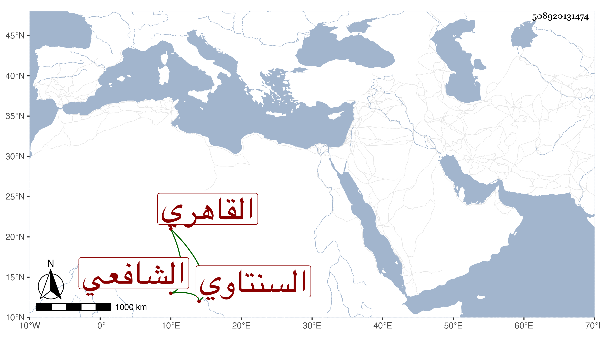

0902Sakhawi.DawLamic.ITO20230111-ara1.EIS1600.508920131474
Biography ID: 508920131474
5
محمد بن عبد الرحمن بن محمد بن حجي بن فضل الشمس بن الزين السنتاوي الأصل القاهري الشافعي سبط المحيوي يحيى الدمياطي والماضي أبوه . نشأ فحفظ القرآن وكتبا عرضها علي في جملة الجماعة واشتغل عند أبيه والجوجري وغيرهما في فنون ، وفضل وبرع ولازمني مدة في قراءة الأذكار وغيره ، وحج ورزق أولادا . كل هذا مع أدب واقتفاء لطريقة أبيه وربما احتطب طلبا للحلال . مات في مستهل المحرم سنة ست وثمانين وصلى عليه عقب صلاة الجمعة بالأزهر في مشهد حافل وتأسف الناس على فقده وأثنوا عليه وتوجعوا لأبيه من بعده عوضهما الله الجنة .
